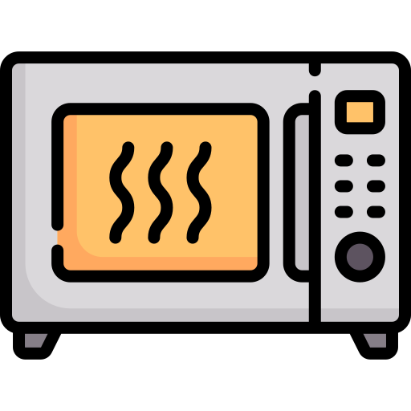
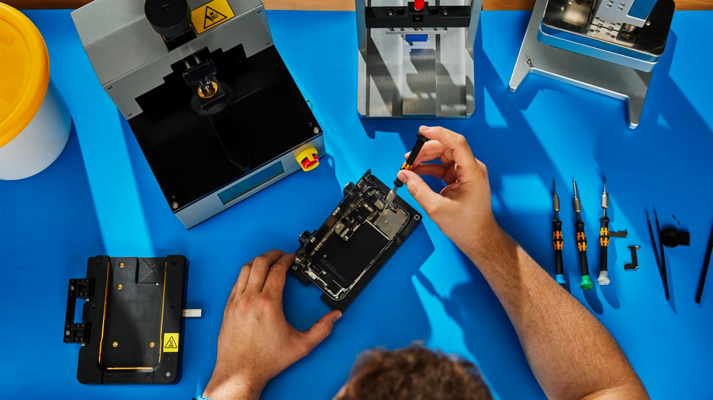

{% if page.before-content %}
 {{ content }}
{% if page.after-content %}
{{ content }}
{% if page.after-content %}
{% for file in page.before-content %}
{% include {{ file }} %}
{% endfor %}
{% endif %}
Before you recycle, have you considered repair?
While recycling old technology can reduce CO2 emissions, repair can avoid emissions completely!
In 2022, New York State passed the "Right to Repair" Law, formally known as the Digital Fair Repair Act
The following items are covered under the Digital Fair Repair Act:

Microwave
Kitchen Appliance
Heating and Ventilation
Under this new law, manufacturers must make available to independent repair providers:
Why does this matter?
Featured Resource: iFixIt
iFixit is a free community sourced forum of repair guides for all different types of products and technologies. The company and website seeks to advocate for the "right to repair" and stand by their motto: "If you can't fix it, you don't own it". iFixIt also sells repair kits that provide tools to open and unlock devices and electronics for repair.
Beyond repair? Choose recycling.
{% for file in page.after-content %}
{% include {{ file }} %}
{% endfor %}
{% endif %}
{% include comments.html %}